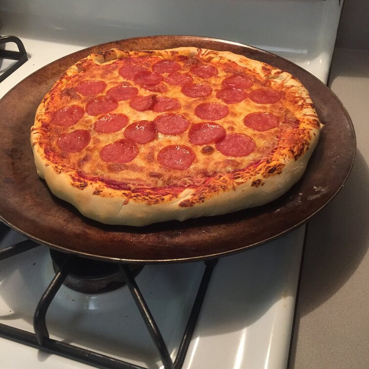

Homemade Pepperoni Pizza

A classic Homemade Pepperoni Pizza, very easy and quick to make
Quick, Easy and Delicious-Homemade pizza crust and tomato sauce has never been easier-and this recipe for
pepperoni pizza produces a delicious classic!
Ingredients
Contadina(R) Quick Pizza Sauce
- 1/2 (12 ounce) can CONTADINA® Tomato Paste
- 1 teaspoon dried oregano, crushed
- 1 teaspoon dried basil, crushed
- 1/2 teaspoon garlic powder
- 1/2 teaspoon onion powder
- 1/2 teaspoon sugar
- 1/2 teaspoon salt
- 1/4 teaspoon black pepper
Fleischmann's® Easy Pizza Crust
- 3.25 cups all-purpose flour, or more as needed
- 2 (.25 ounce) envelopes FLEISCHMANN'S® Pizza Crust Yeast or RapidRise® Yeast
- 1 tablespoon sugar
- 1.5 teaspoons salt
- 1.3 cups very warm water (120 degrees F to 130 degrees F)
- 1/3 cup oil
Toppings
- 1 (6 ounce) package HORMEL Pepperoni
- 1 cup shredded mozzarella cheese, or more to taste
Steps